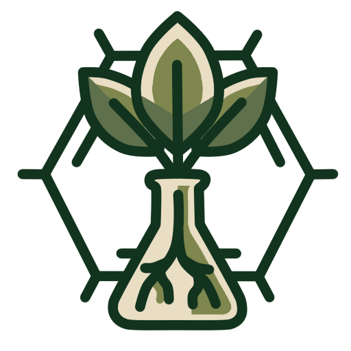

Farmacognosia y
Medicina Tradicional
UNMSM - Facultad de Farmacia y Bioquímica
Inicio
Nosotros
▼
Quienes Somos
Misión y Visión
Investigación
▼
Líneas de Investigación
Proyectos
Equipo
Novedades
Contacto
MISIÓN
Somos un grupo de investigación multidisciplinario de la Facultad de Farmacia y Bioquímica de la Universidad Nacional Mayor de San Marcos, dedicado al estudio científico, fitoquímico, farmacológico y toxicológico de los recursos naturales y la biodiversidad peruana. Generamos conocimiento riguroso que permite validar, estandarizar y aprovechar de manera sostenible los saberes de la medicina tradicional, formando investigadores íntegros con alto sentido ético y compromiso social, orientados al desarrollo de fitomedicamentos y productos naturales seguros y eficaces que contribuyan a mejorar la salud pública y el bienestar de la población.
VISIÓN
Ser al 2030 un grupo de investigación referente a nivel nacional e internacional en el campo de la farmacognosia, los productos naturales y la medicina tradicional, reconocido por su excelencia científica, innovación tecnológica y producción académica de alto impacto. Aspiramos a liderar la articulación entre el conocimiento ancestral y la ciencia farmacéutica moderna, promoviendo la conservación de la biodiversidad, la transferencia tecnológica hacia el sector productivo y la formulación de soluciones terapéuticas sostenibles que respondan a las necesidades sanitarias del país y la región.